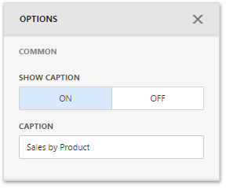

Dashboard Item Caption
Each dashboard item has a caption that is displayed at the top of this item. The caption contains static text and other information, as well as command buttons.

You can control the dashboard item caption's visibility.
- When the caption is on, it is always displayed at the top of the dashboard item. Some command buttons are displayed when you hover the mouse pointer over them.
- When the caption is off, it is not visible by default. Some command buttons are displayed in a floating panel when you hover the mouse pointer over them. On touch-based devices, you need to do extra click to show the caption elements when the caption is hidden.
To show or hide the caption of a dashboard item, go to the dashboard item Options menu and use the Show Caption option.

Note
The Range Filter dashboard item's caption is not visible by default.
The dashboard item caption consists of the following elements:
- A static item is visible only if the caption is enabled (for example, the item caption, the data reducing icon).
- An action item is displayed only when the mouse pointer hovers over the dashboard item caption (for instance, the Export To and Values buttons).
- A state item is displayed only in specific dashboards states (for example, the Drill Up and Clear Master Filter buttons).
- A navigation item allows you to navigate through different dashboard screens (for example, Dashboards and Back buttons in mobile layout).
The table below lists the information and buttons that can be displayed in the dashboard item caption.
| Icon / Text | Item | Description |
|---|---|---|
| Data Reducing icon | Static. Shows that visible data is limited. | |
| Text | Drill-Down Text | Static.Shows a value or values from the current drill-down hierarchy. See Drill-Down for more details. |
| Text | Caption Text | Static. Shows a static text in the caption. |
| Maximize button | Action. Expands any dashboard item into the whole dashboard size to examine data in greater detail. Refer to Dashboard Items Layout for more information. | |
| Restore button | Action. Restores the expanded item to its initial state. | |
| Export to button | Action. Invokes the export menu for a dashboard item. To learn how to export individual dashboard items, see Exporting. | |
| Values button | Action. Invokes a drop-down menu that allows you to switch between provided values (in the pie, card, gauge and maps dashboard items). To learn more, see the Providing Data topic for the corresponding dashboard item. | |
| Multi-Select button | Action. Allows you to filter data by selecting multiple elements in dashboard items. | |
| Select Date Time Period menu / button | Action. Allows you to select date-time periods for the Range Filter. | |
| Filters button | Action. Displays filters affecting the current dashboard item or entire dashboard. This button is only available in mobile layout. | |
| Clear Master Filter button | State. Allows you to reset filtering when a dashboard item acts as the Master Filter. To learn more, see Master Filtering. | |
| Drill Up button | State. Allows you to return to the previous detail level when the drill-down capability is enabled for this item. | |
| Clear Selection button | State. Allows you to clear the selection inside an item. | |
| Initial Extent button | State. Restores the default size and position of the Map dashboard items. | |
| Dashboards | Dashboards button | Navigation. Displays a list of available dashboards. |
| Back button | Navigation. Returns to the dashboard items list. |